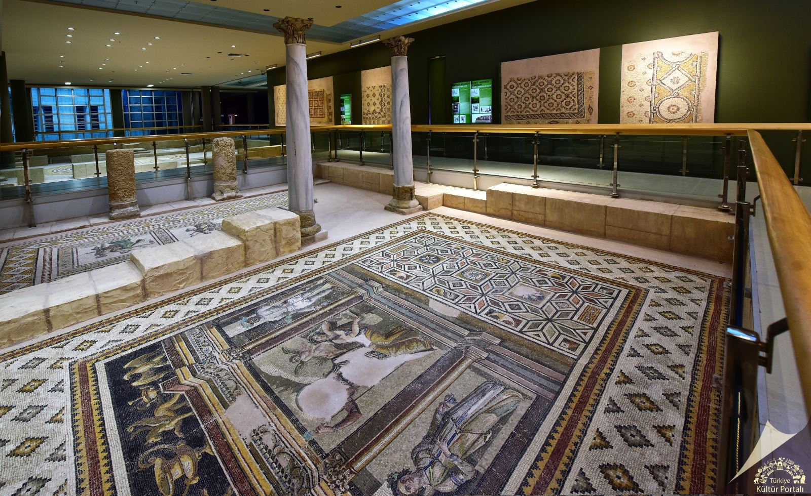
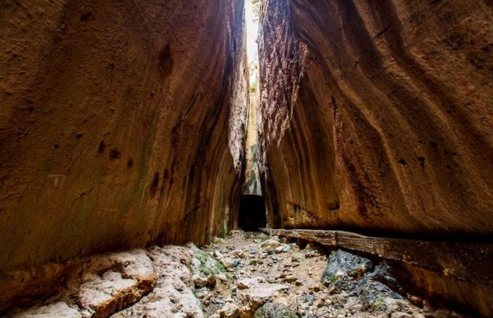
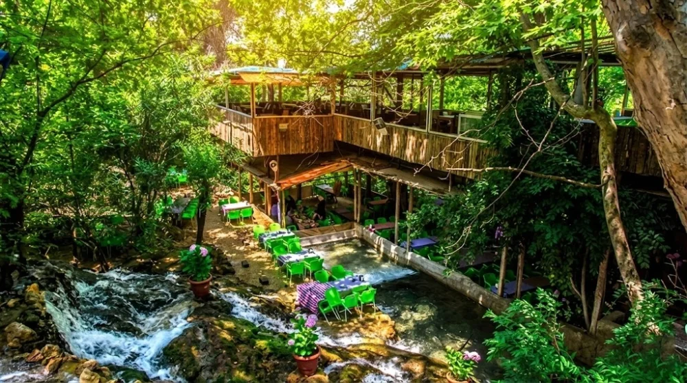
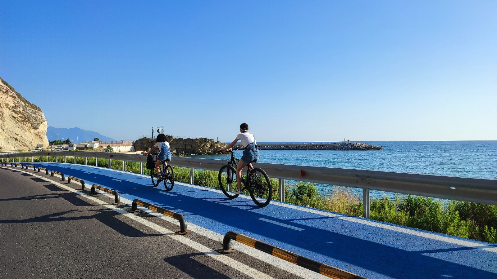

Medeniyetler Beşiği: Hatay
Hatay, tarihi boyunca birçok farklı kültüre ev sahipliği yapmış, eşsiz doğası ve UNESCO tescilli gastronomisiyle Türkiye'nin en özel şehirlerinden biridir.

Antakya Arkeoloji Müzesi
Dünyanın en büyük mozaik müzelerinden biri.

Titus Tüneli
Roma döneminden kalma muazzam bir mühendislik harikası.

Harbiye Şelalesi
Mitolojik hikayelere konu olmuş eşsiz doğa harikası.

Habib-i Neccar Camii
Anadolu'da inşa edilen ilk camilerden biri.

Samandağ Bisiklet Yolu
Dünyanın en uzun kesintisiz bisiklet yollarından biri olan eşsiz bir rota.
Şehir Hakkında Bilgiler
Nüfus: Yaklaşık 1.6 milyon.
Gezilecek Yerler: Antakya Arkeoloji Müzesi, Titus Tüneli, Harbiye Şelalesi, St. Pierre Kilisesi, Habib-i Neccar Camii, İskenderun Sahili.
Kültür ve Gastronomi
Hatay, cami, kilise ve havranın yan yana bulunduğu bir hoşgörü şehridir. Aynı zamanda Künefe, Tepsi Kebabı ve Kağıt Kebabı gibi lezzetleriyle UNESCO Yaratıcı Şehirler Ağı'nda gastronomi alanında yer almaktadır.